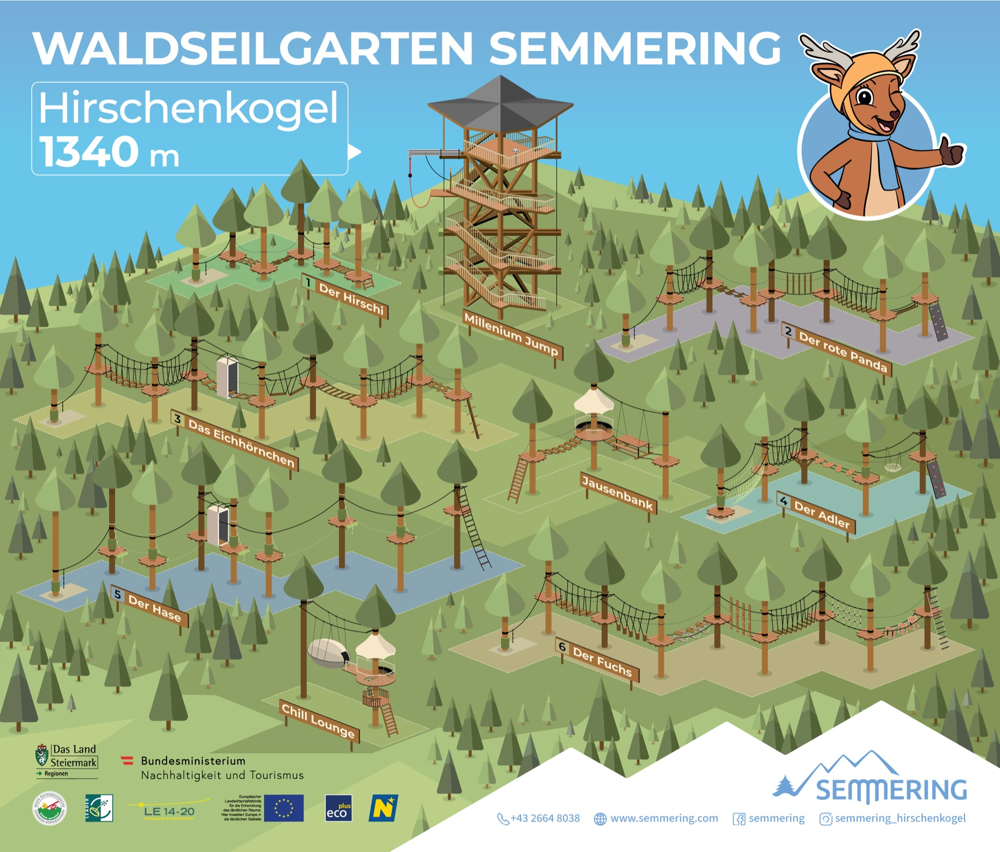
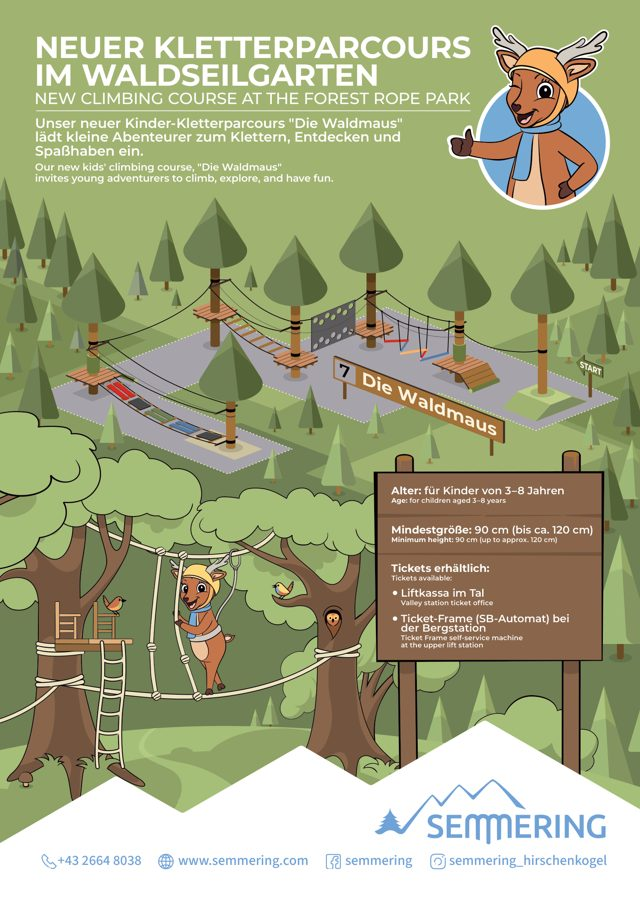
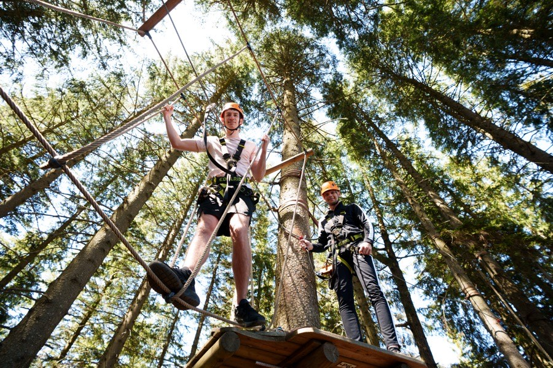
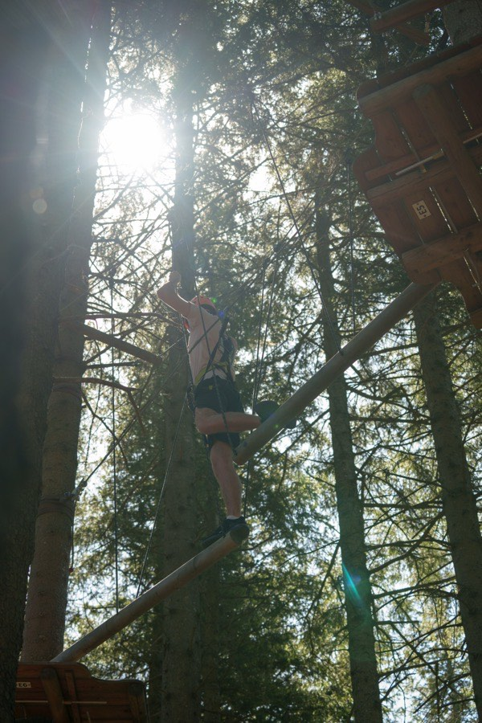
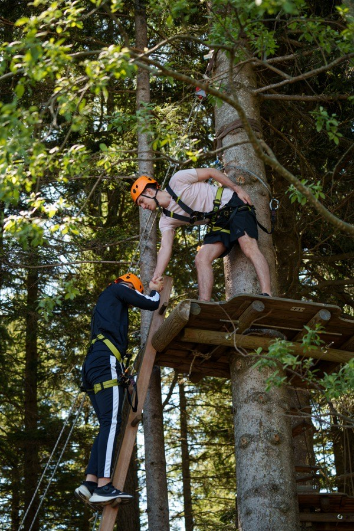
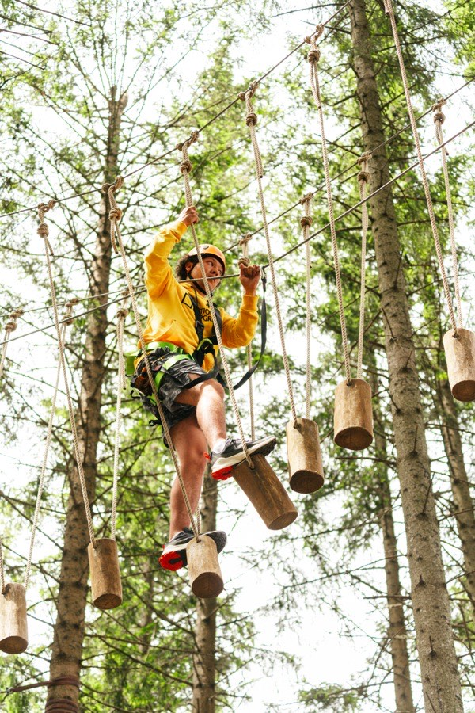
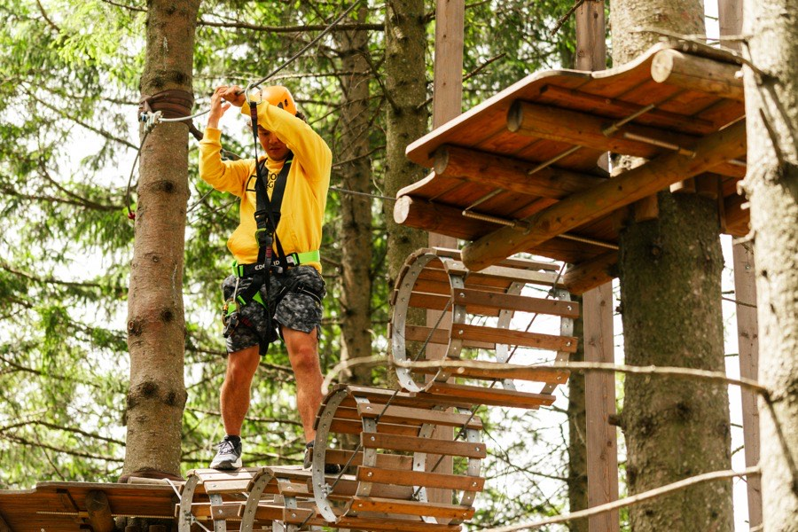
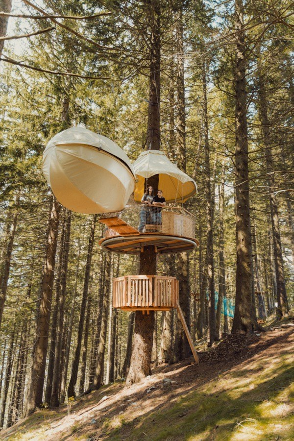
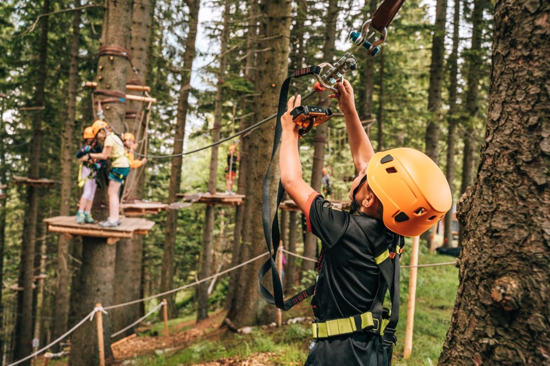

Waldseilgarten (Hochseilgarten): 7 Parcours über den WipfelnRopes park: 7 courses above the treetops
Klettern, schwingen, über dir nur der Gipfel — ab 6 Jahren und 110 cm, Ausrüstung inklusive.Climb, swing, only the summit above you — from age 6 and 110 cm, gear included.
Kletterpark-Karte & die 7 ParcoursCourse map & the 7 parcours


Neuer Kinder-Parcours: Die WaldmausNew kids course: Die Waldmaus
Speziell für die Kleinsten — 3–8 Jahre, ab 90 cm (bis ca. 120 cm): der neue Parcours Die Waldmaus lädt zum Klettern, Entdecken & Spaßhaben ein. Tickets an der Liftkassa im Tal oder am SB-Automat an der Bergstation.Just for the littlest ones — ages 3–8, from 90 cm (up to approx. 120 cm): the new Die Waldmaus course invites climbing, exploring & fun. Tickets at the valley lift office or the self-service machine at the top station.
Der HirschiThe Hirschi
Einstiegentry levelDer Einstiegsparcours — benannt nach Maskottchen Hirschi; als einziger ab 14 ohne Begleitung.The entry-level course — named after Hirschi the mascot; the only one you may climb solo from 14.
Der rote PandaThe Red Panda
mittelintermediateMit Kletterwand-Element zum Abschluss.Finishes with a climbing-wall element.
Das EichhörnchenThe Squirrel
mittelintermediateSerie von Hängebrücken durch die Wipfel.A run of rope bridges through the treetops.
Der AdlerThe Eagle
mittelintermediateKletternetz & Kletterwand zum Finale.Climbing net & climbing wall for the finale.
Der HaseThe Hare
schweradvancedHohe Plattformen — Chill Lounge gleich nebenan.High platforms — chill lounge right next door.
Der FuchsThe Fox
schweradvancedDer längste Zug auf der Parcours-Karte — für Ausdauernde.The longest stretch on the course map — one for the stayers.
Die Waldmaus ★ neuDie Waldmaus ★ new
Kinder (bodennah)kids (near-ground)Neu 2026: 6 bodennahe Elemente — Mini-Fox 1 & 2, ZickZack-Brücke, Kletterwand, Rundholz- & Hängebrücke.New 2026: 6 near-ground elements — mini fox 1 & 2, zigzag bridge, climbing wall, log & rope bridges.
Je höher die Ebene, desto schwieriger & länger. Parcours frei wählbar & mehrmals kletterbar. Parcours 1–6: unter 6 Jahren nicht erlaubt — für die Kleinsten (3–8) gibt es die Waldmaus. Empf. Begleitung 1:10.The higher the level, the harder & longer. Courses freely chosen & repeatable. Courses 1–6: not permitted under 6 — for the littlest (3–8) there is the Waldmaus. Rec. supervision 1:10.
Waldseilgarten in BildernRopes park in pictures







Parcours-Videos: Durchfahrten ansehenParcours videos: watch the run-throughs
Offizielle Parcours-Durchfahrten — © Semmering Hirschenkogel.Official course run-throughs — © Semmering Hirschenkogel.
Klettern über den Wipfeln — Balance & Adrenalin.Climbing above the treetops — balance & adrenaline.
Gut zu wissenGood to know
7 Parcours — Größe, Alter & Begleitung7 courses — height, age & supervision
Parcours 1 Der Hirschi — mind. 110 cm (Reichhöhe 160): 6–13 J. in Begleitung einer erwachsenen Person vom Boden (empf. 1:10); ab 14 J. unbegleitet.
Parcours 2 Der rote Panda · 3 Das Eichhörnchen · 4 Der Adler — mind. 110 cm (Reichhöhe 160): 6–13 J. in Begleitung (empf. 1:10); ab 14 J. mit Begleitung vom Boden; ab 18 J. unbegleitet.
Parcours 5 Der Hase · 6 Der Fuchs — mind. 140 cm (Reichhöhe 180): 9–13 J. in Begleitung; ab 14 J. in Begleitung; ab 18 J. unbegleitet.
Parcours 7 Die Waldmaus (neu 2026) — bodennaher Parcours für die Kleinsten: Fox 1 & 2, ZickZack, Kletterwand, Rundholz- & Hängebrücke (Plattformhöhen 0,73–1,49 m). Parcours frei wählbar & mehrmals kletterbar.The park has 7 courses on different levels — the higher, the harder and longer. Courses 1–6 are not permitted under 6 — for the littlest (3–8) there is the Waldmaus.
Course 1 The Hirschi — min. 110 cm (reach 160): ages 6–13 accompanied by an adult from the ground (rec. 1:10); from 14 unaccompanied.
Courses 2 The Red Panda · 3 The Squirrel · 4 The Eagle — min. 110 cm (reach 160): ages 6–13 accompanied (rec. 1:10); from 14 with ground supervision; from 18 unaccompanied.
Courses 5 Hare · 6 Fox — min. 140 cm (reach 180): ages 9–13 accompanied; from 14 accompanied; from 18 unaccompanied.
Course 7 The Waldmaus (new 2026) — near-ground course for the littlest: Fox 1 & 2, zigzag, climbing wall, log & rope bridges (platform heights 0.73–1.49 m). Courses freely chosen & repeatable.
Ablauf, Zeiten & AusrüstungSchedule, times & gear
Jausenbank & Chill LoungeSnack bench & chill lounge
Öffnungszeiten & NÖ-CardOpening hours & NÖ Card
SchulausflügeSchool trips
Kindergeburtstage — Preise & LeistungenKids' birthdays — prices & inclusions
Kombi-PaketeCombo packages
Passt gut dazuGoes well with
Dein Schlüssel zum Gipfel: Spielplatz, Goldwaschen, Tiergehege, Aussicht & Events — plus Waldseilgarten & Mountaincart-Abfahrt. 55 € statt einzeln 87 € (Erw.) · Kinder ab 28 €.Your key to the summit: playground, gold panning, animal enclosure, views & events — plus ropes park & mountain-cart run. €55 instead of €87 separately (adults) · kids from €28.
Als Tagesgast oder mit Übernachtung — dein passendes PaketAs a day guest or with an overnight stay — your matching package

{kind=link}
{kind=link}
{kind=link}
Häufige FragenFrequent questions
Alle FAQs für Sommer & Winter →All FAQs for summer & winter →
Wohin als Nächstes?Where to next?